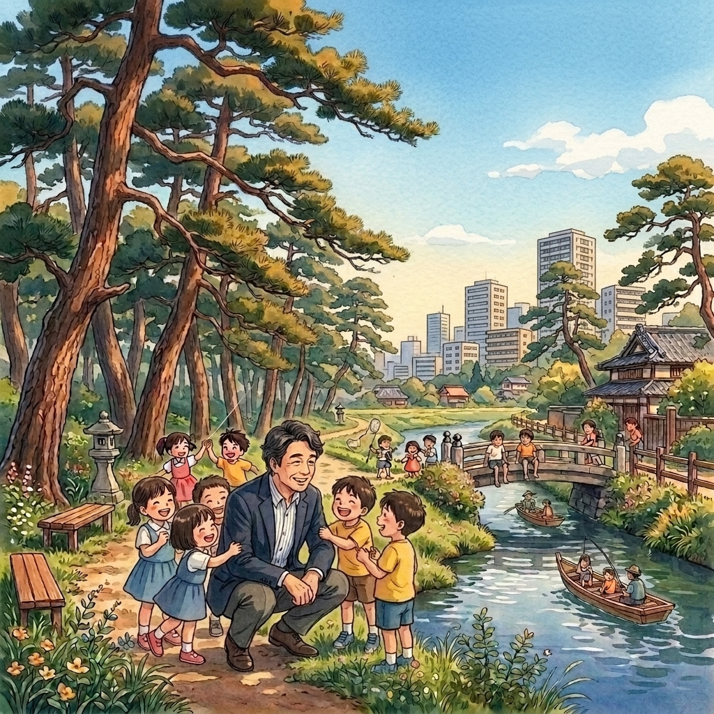

VISION政治理念
草加の課題と向き合う
「覚悟」
政治は、遠い場所にあるものではありません。
日々の暮らしの中にある「課題や困り事」と向き合い、
解決を図る営みこそが、政治です。
私は常に住民の声に耳を傾け、地域の課題や市政全体の向上、
ときには社会全体が直面する事まで。その解決・改善にむけて
走り続けています。

ACTIVITY LOG
活動記録一覧ACHIEVEMENTS 地域に刻んだ実績
しばの勝利が草加市で実現したこと・取り組んできたことの一部をご紹介します。
バス停付近の歩道整備
市内2か所のバス停周辺で歩道を整備。誰もが安心して歩ける生活環境づくりを実現。
整備済み桜並木の整備
市内2か所の道路沿い桜並木を整備。四季を感じられる美しい街並みづくりに貢献。
整備済み水路整備
地域の水路を整備し排水機能を向上。浸水リスクの低減と安全な住環境の確保を実現。
整備済み参道整備
地域の神社参道を整備。歴史ある文化的空間を守り、コミュニティの心のよりどころを次代へつなぐ。
整備済み障害福祉施設の立ち上げ
障がい者支援施設の立ち上げを支援。地域に根ざした福祉の場を創出。
実現済み地域密着型高齢者施設の立ち上げ
地域密着型の高齢者介護施設の立ち上げを支援。住み慣れた草加で最後まで暮らせる環境を整備。
実現済み
PROFILEプロフィール
「ぬかみそ」も「市政」も、
日々の手入れが命です。
私は漬物が大好きで、特に「ぬかみそ」には、少々うるさいのです。
毎日かき混ぜないと、良い味が出ない。冬は少し休ませてあげる。
そうやって手間暇かけると、絶妙な味になる。
政治も同じです。
放っておけば、市政はすぐに澱んでしまう。
だから私は、毎日現場を歩き、皆さんの声をかき混ぜて、
この街を活性化させたいのです。
- 生年月日
- 昭和42年5月16日（川口生まれ）
- 家族
- 妻・子供二人
- 学歴
- 川口市立新郷東小 → 榛松中学校 → 埼玉県立川口東高校 → 拓殖大学商学部卒
- 職歴
- usuiレストラン（ロサンゼルス店）/ 衆議院議員 浜田卓二郎事務所 / (株)川島製作所 / 衆議院議員 今井宏 公設秘書
- 議員活動
- 草加市議会議員（約23年）/ 元草加市議会議長
- 社会活動
- 元小山小学校 第10代PTA会長 / 草加八潮保護司会 / 障害者福祉施設 理事長代行 / 社会福祉法人（特別養護老人ホーム）理事長 / 拓殖大学学友会 埼玉東部支部幹事長 / 社団法人埼玉県馬主会 外部監査役